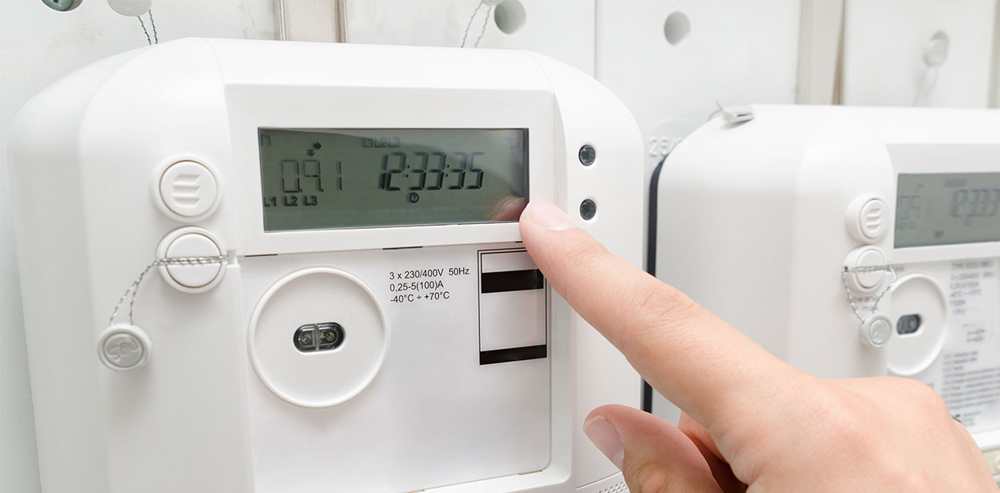

La importancia económica del sector energético es evidente; hablamos de un campo que tiene que ver con la explotación de hidrocarburos y la generación de electricidad, es decir, con todo aquello que está necesariamente presente en la economía nacional,
regional y global, a través de la industria del transporte y del uso de energía eléctrica.
Las ventajas de IoT en los procesos productivos están más que comprobadas; usarlo genera múltiples beneficios en empresas de muy distinto tipo:
desde la industria manufacturera hasta una tienda online, pasando por negocios de publicidad, marketing, educación y muchos más; aboquémonos ahora a revisar algunas de las principales aplicaciones de IoT en el sector energético –lo que se da a
llamar Smart Energy– enfocados en el uso de la energía eléctrica.
Un medidor inteligente es un dispositivo que mide el gasto de energía eléctrica de una empresa pública o privada, una casa habitación o cualquier otro espacio; se diferencia del medidor tradicional analógico en que no necesita de empleados que lean la información registrada de manera presencial, debido a que los datos son enviados a control remoto y de manera automática a un centro de control; además, un medidor inteligente envía lecturas por día, hora, minuto o de manera constante, avisa de inmediato sobre casos de robo, intromisión o manipulación externa y en caso de corte de luz el centro de control está en condiciones de informar el hecho a las instancias correspondientes para que atiendan el caso.
Por medio del uso de sensores es posible disminuir los costos de energía eléctrica en la iluminación de espacios de todo tipo; esto programando la iluminación en determinados horarios del día y la noche o activándola sólo cuando se detecta la presencia de personas, animales u objetos en un radio espacial definido previamente, a través de detectores de presencia que operan con sensores de infrarrojo que perciben el calor, o con sensores de radar que captan los cambios de frecuencia de las ondas de los cuerpos, por su parte, los sensores crepusculares modulan la iluminación artificial en función de la luz natural que existe en un espacio; todo ello trae como consecuencia el ahorro significativo del uso de electricidad, que en un hogar puede llegar al 80%, y la personalización del uso de luz en un espacio que siempre posee necesidades específicas que pueden ser programadas.
Con la utilización de termostatos inteligentes el clima de un espacio –empresa, centro comercial, casa habitación, etc. – se puede regular de manera automatizada y a distancia; la forma en que operan estos dispositivos es mediante sensores que registran las distintas características del clima y en función de ellas activa o desactiva el uso de aire acondicionado o calefacción, cuyo funcionamiento está previamente programado para operar de determinada manera.
Los principales beneficios que trae consigo la aplicación de estos dispositivos de IoT en el sector energético son: ahorro en el costo de uso de energía eléctrica, aumento de la productividad y rentabilidad empresarial, mejoramiento de la operatividad
de una empresa, predicción y resolución de problemas y mejoramiento de la seguridad.
Ya sea para que tu empresa ahorre costos en el uso de energía eléctrica mediante la utilización de dispositivos de IoT o de que pienses invertir
en la fabricación, importación o creación de nuevas tecnologías inteligentes en el sector energético, el hecho es que la aplicación de IoT en este sector es una realidad que tu negocio no puede dejar de aprovechar.